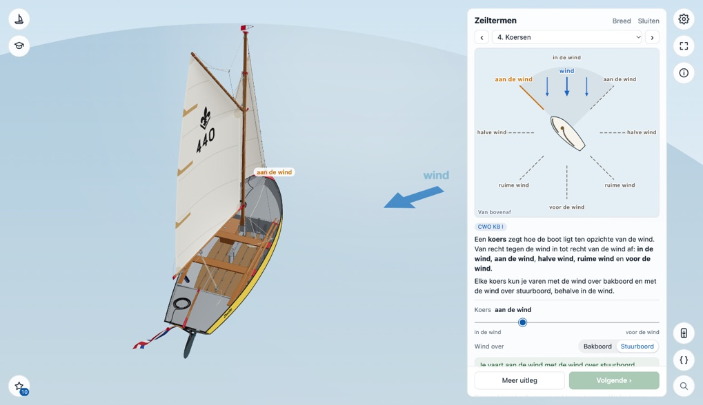
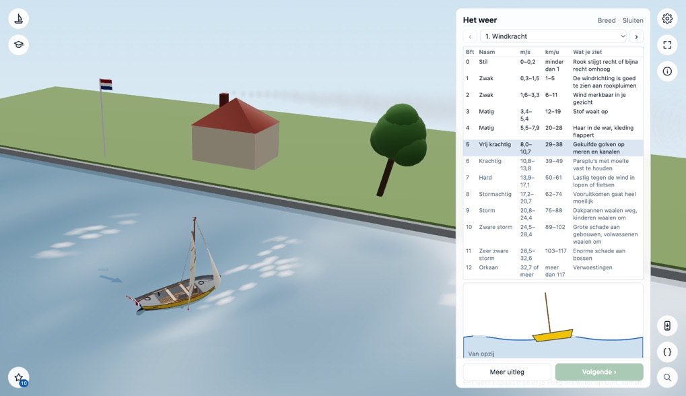
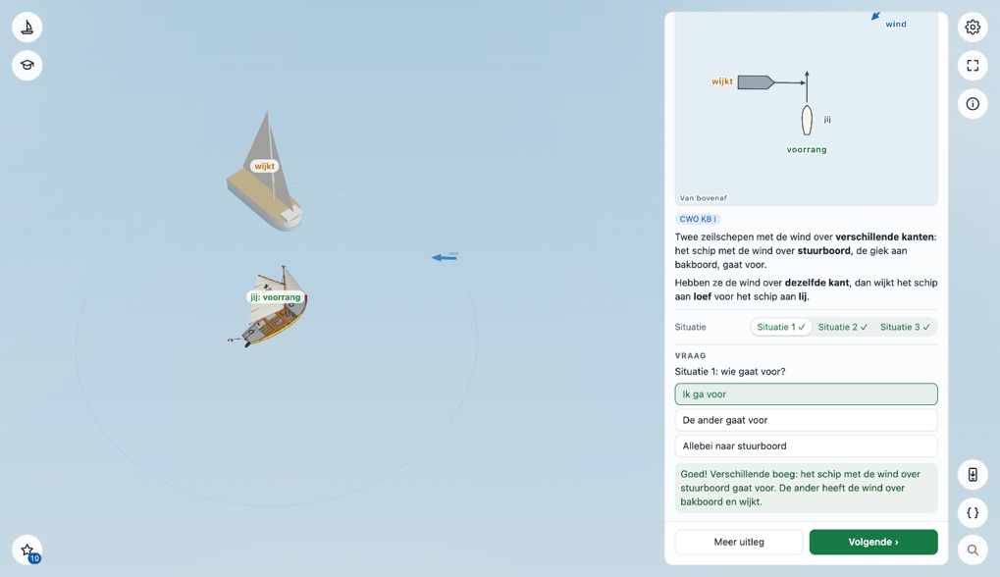
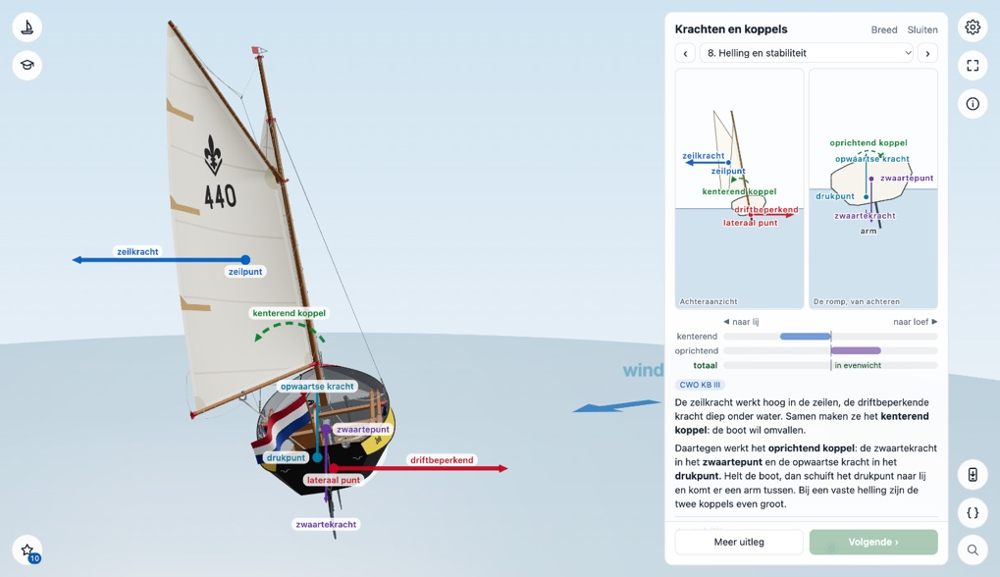

Lessen
Korte lessen bij de lesstof, in de volgorde van de lesboeken: zeiltermen, het weer, grote schepen, bruggen en sluizen, de regels en de voorrang, verkeerstekens, geluidsseinen, lichten en de krachten. Op de boot zelf en in een tekening ernaast.
Een les openen
Open Leren (de studentenmuts); Leren opent op Lessen. Kies een les. De les opent in een kaart naast de boot, en de boot doet mee met wat de les laat zien: zeilend, roeiend of met de zeilen gestreken.
- Bovenin kies je een onderwerp, of ga je met ‹ en › naar het vorige of volgende.
- Bij elk onderwerp staat een korte uitleg en een tekening, en kun je zelf dingen veranderen met knoppen en schuiven. Een regel eronder zegt wat de boot nu doet.
- Bij Vraag beantwoord je eerst een vraag. Daarna laat de boot zien wat het goede antwoord is.
- Onderaan staan twee knoppen. Meer uitleg laat zien wat er verder over te zeggen is. Met Volgende ga je naar het volgende onderwerp; heeft het onderwerp een vraag, dan kan dat pas als je die hebt beantwoord. Bij het laatste onderwerp staat er Klaar.
De regel onder de knoppen kleurt mee met wat er gebeurt: geel als je moet wachten of opletten, oranje als het misgaat, en rood als het verboden of gevaarlijk is, zoals in de dode hoek van een groot schip.
In een les staat wat de CWO vraagt; bij elk onderwerp zie je voor welk diploma. De meeste lessen eindigen met Zelf verkennen: alles wat de viewer erover heeft, ook wat de CWO niet vraagt, vaak met een knop naar dezelfde plek in Zoeken of naar een quiz.
Je browser onthoudt welke onderwerpen je hebt gevolgd: geopend, en de vraag beantwoord. In de lijst onder Lessen staat per les hoeveel, en een gevolgd onderwerp krijgt een vinkje achter zijn naam.
Op een groot scherm zet Breed bovenin de kaart de tekening groot naast de uitleg; Smal maakt de kaart weer smal. Die keuze geldt voor alle lessen.
Je sluit de les met Sluiten. Start je een manoeuvre of een quiz vanuit Leren, dan gaat de les ook dicht. Op een telefoon vult de les bijna het hele scherm. Schuif de streep bovenin (Laat boot zien) naar beneden om de boot te zien; schuif de balk onderin (Terug naar de les) omhoog om terug te gaan. Tikken op de streep of de balk kan ook.
Het logboek
De ster linksonder is het logboek. Het zet op een rij hoe ver je bent met elke les, en per quiz hoeveel procent je goed had. Onder Ontdekt komt wat je zelf hebt gevonden. In de lessen gebeurt soms meer dan de uitleg zegt, vooral als je iets te ver doorzet: wat dat is, zie je pas als je het zelf tegenkomt. Het getal bij de ster telt wat je hebt ontdekt. Net als de vinkjes onthoudt je browser het logboek.
Begrippen in Zoeken
In Zoeken staat de tegel Begrippen: de zeil- en roeitermen, zoals loef, killen of deinzen, elk met een korte uitleg. Zoek op een woord of kies een groep. Bij een begrip staan knoppen naar waar je het ziet: een onderwerp van een les, een stap van een manoeuvre (die opent in Bekijken, stil op die stap), een onderdeel, of een bord, licht of sein in Zoeken. Moet de boot eerst iets anders doen, zoals afmeren of ankeren, dan staat dat erbij en opent het lijstje Manoeuvres.
Zeiltermen


De woorden die je op het water gebruikt:
- Bakboord en stuurboord: kijk van achteren of van voren naar de boot.
- Loef en lij: de hoge en de lage kant, met de wind over bakboord of over stuurboord.
- Hogerwal en lagerwal: de twee wallen liggen op het water, aan loef en aan lij.
- Koersen: van in de wind tot voor de wind, met alle koersen rond de boot in de tekening.
- Oploeven en afvallen: draai de boot met de knoppen naar de wind toe of ervan af.
- Overstag, Opkruisen en Gijpen: de boot vaart ze echt, en de tekening laat zien welke weg ze aflegt.
- Zelf verkennen: zet aan wat je wilt zien, kies een koers en kijk of je het goed had. Een knop gaat naar de quiz Zeiltermen.
De tekening heeft de wind van boven, zoals in het lesboek.
Het weer


De windkracht in Beaufort, in m/s en km/u, en wat je dan ziet: met de schuif, of een klik op een regel van de tabel, zie je de golven hoger worden en witte koppen krijgen, de rook uit een schoorsteen platter waaien, een boom buigen en een vlag strak gaan staan. De boot deint en helt mee en haar vlag waait harder. Tot en met 5 Beaufort zeilt ze een koers; vanaf 6 Beaufort gaan de zeilen eraf en ligt ze met de kop in de wind. De wind blijft uit dezelfde richting komen. Onder de tabel zie je de golven van opzij, met de lelievlet erop: hoger en langer, met schuimkoppen en ten slotte brekende golven. Bij 10 Beaufort waait de boom om, bij 11 de vlaggenmast en bij 12 het dak van het huis. Verder: tot hoeveel Beaufort je mag varen, een weersomslag die je kunt laten gebeuren, en ruimen en krimpen op een kompas.
Grote schepen
Een vrachtschip naast de lelievlet: de dode hoek voor de boeg, zuiging langs de zij- en achterkant (je kiest zelf hoe dicht je langs het schip vaart), de diepgang in een vaargeul (met een doorsnede van het water) en verlijeren.
Bruggen, Sluizen
Twee lessen: Bruggen en Sluizen. Een brug of sluis voor de boot, met de borden en lichten zoals het BPR ze heeft: vaste en beweegbare bruggen, onder een gesloten brug door (met de mast gestreken), buiten bediening, de hoogteschaal; een sluis in- en uitvaren, spuien en inlaten (met de stroming op het water en in een schets van bovenaf), en een brug bij een sluis. De boot ligt stil met de zeilen gestreken. Bij de hoogteschaal en de bruggen waar je onderdoor mag, vaar je met Vaar erdoor zelf onder de brug door, met de mast staand of gestreken.
Regels, Voorrang, Verkeerstekens, Geluidsseinen
Regels: groot en klein schip (met een maatlat van 20 meter), zeilschip en motorschip, goed zeemanschap, het BPR en andere reglementen, de schipper, golfslag en motorplicht.


Voorrang: jij bent de lelievlet, en een ander schip kruist je koers, komt je tegemoet of loopt je op. De boten liggen stil tot je antwoordt. Op de eerste pagina zeg je alleen wat voor ontmoeting het is; daarna kies je wie er voorgaat. Dan gaan ze varen, wijkt de juiste uit (of stopt, voor een engte) en zie je welke regel het is. Een situatie die je goed hebt, wordt groen; pas als je alle situaties van een onderwerp goed hebt, ga je met Volgende verder. Het beeld staat stil en beide boten varen, op het water en in de tekening; moet jij uitwijken, dan draait je eigen boot weg. Ook zeilschepen onderling, de engte en keren of vertrekken. De laatste pagina zet de regels op een rij en heeft een knop naar de quiz Voorrang.
Verkeerstekens: de borden die de CWO vraagt, waar ze echt staan: de meeste op een paal bij de boot, en wat aan een brug hangt aan een brug voor je. De lichten bij bruggen en sluizen, zoals rood boven groen, zitten in de lessen Bruggen en Sluizen. De knoppen dragen de naam van het bord; Zelf verkennen heeft een knop naar Zoeken en naar de quiz Verkeerstekens. Geluidsseinen: de acht seinen om te horen, terwijl een motorbootje doet wat het sein zegt.
Lichten en dagtekens
De vier soorten lichten als waaiers op het water rond een schip, en in de kaart als tekening van bovenaf. Daarna schepen van voren, opzij of achteren, bij dag of bij nacht: een groot motorschip, zeilschepen en kleine schepen, dagtekens, slepen, stilliggende schepen, werk, nood en duikers. Je kijkt dan laag over het water, zoals vanuit een kleine boot, en de kaart tekent het schip zoals je het ziet, met de lichten die je van die kant ziet. Overdag zie je geen lichten, alleen de dagtekens. Bij een vraag over lichten staat een plaatje met de lichtstippen.
Krachten en koppels


Wat de wind, het zeil, het zwaard en het roer met de boot doen: Kracht en koppel, Stroming en druk, Zeilkracht, De juiste zeilstand (met de stroming bij een goed, te strak en te los zeil), Zwaard en lateraal punt, Sturen met de zeilen, Helling en sturen, Helling en stabiliteit, Ware en schijnbare wind, Het roer en Zelf verkennen.
De krachten staan als pijlen op de boot en in de tekening: blauw voor de lucht, rood voor het water, paars voor de zwaartekracht, blauwgroen voor de opwaartse kracht, oranje voor de vaart, en een groene gestippelde boog voor een koppel. Hoe langer de pijl, hoe groter de kracht. De boot helt en stuurt zoals de krachten zeggen.